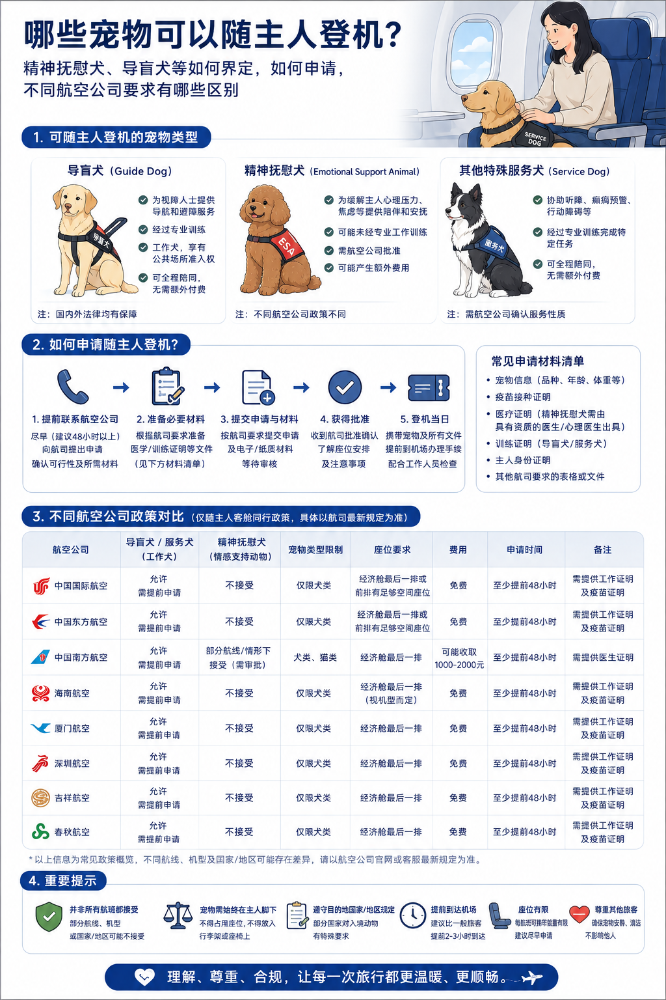

普通宠物
最常见的是家庭驯养的猫、狗。重点不是“能不能陪主人坐”，而是是否符合小动物运输条件、航班是否承运、容器和证明是否齐全。
能不能进客舱、是不是办个证明就行、精神抚慰犬算不算服务犬，这些问题之所以总在机场变成混乱，往往不是因为准备不够，而是因为一开始就没把规则分流看清楚。对大多数旅客来说，先判断“按哪种规则走”，比先问“能不能带上飞机”更重要。

这篇文章最核心的提醒只有一句话：普通家庭饲养的猫狗，大多数情况下走的是小动物运输规则；真正能按服务犬规则进入客舱的，是符合定义、经过专门训练并由符合条件旅客携带的服务犬。精神抚慰犬在公开规则里通常不等于服务犬。
准备带宠物坐飞机的人、想搞清服务犬规则的人、做航空科普内容的人。
大多数误会都不是出在最后一步，而是出在第一步：把普通宠物、服务犬和精神抚慰犬当成了一回事。
如果你带的是普通家庭驯养猫狗，就先按小动物运输逻辑理解；只有符合定义的服务犬，才讨论客舱运输路径。
最常见的是家庭驯养的猫、狗。重点不是“能不能陪主人坐”，而是是否符合小动物运输条件、航班是否承运、容器和证明是否齐全。
服务犬是经过专门训练、为残疾人生活和工作提供协助的特种犬。它不是一个情绪表达，而是一种规则定义和训练身份。
在日常语言里常被理解成“能陪伴、能安抚情绪”，但在公开航空规则里，通常并不自动等于可按服务犬客舱规则办理。
很多人一上来问的是“能不能带上飞机”，但航空公司真正先判断的，是你带的对象属于哪一类运输对象，适用哪一套规则。
如果是普通家庭驯养的猫狗，首先适用的是小动物运输规则。只有当对象是符合定义、经过专业训练的服务犬，并且由符合条件的旅客携带时，才进入另一条截然不同的客舱服务流程。
这也是为什么，同样看起来都是“陪主人出行的犬”，规则结果可能完全不同。图上把三种类型并列展示，本身就比很多口头解释更有效，因为它把概念边界先画清楚了。
很多旅客说“带宠物坐飞机”，默认想的是“和我一起进客舱”。但对绝大多数普通猫狗来说，航空公司先执行的是小动物运输标准。
不是宠物乖不乖，而是是否符合承运条件、是否被航班和机型接受。
按国航公开说明，家庭驯养的猫、犬在符合运输条件并经同意的情况下，可以作为限制运输行李办理。这里最关键的不是“有无感情基础”，而是它本身是否符合运输要求。
短鼻系列猫狗及其杂交品种、怀孕、出生不超过 8 周、哺乳期、分娩 7 天内或生病的猫狗，都可能不予承运。也就是说，不是“只要是宠物就能飞”，而是“先符合运输条件，才谈得上怎么飞”。
普通旅客真正该提前准备的，不是怎么在柜台说服工作人员，而是宠物健康状态、品种限制、航班承运条件、检疫证明和运输容器是否齐备。
普通宠物乘机，大多数情况下不是客舱同行逻辑，而是小动物托运逻辑。越早接受这一点，准备越不会走偏。
| 普通宠物 | 核心看是否符合小动物运输条件，以及航班是否允许承运。 |
|---|---|
| 申请节点 | 订座时提出申请，经同意后方可运输。 |
| 现场办理 | 公开规则提到，相关办理通常应至少在起飞前 120 分钟完成。 |
| 常见误会 | 把“乖巧、安静、情绪依赖”误认为“可以走服务犬客舱规则”。 |
先确认宠物能不能运，再确认这一班能不能运，最后才是怎么运。
真正值得担心的不是术语本身，而是宠物是否能被安全承运，以及你的航班机型是否具备相应条件。
不要把宠物托运当成普通行李托运的顺手附带版，它是一项带条件的特殊运输服务。
旅客口中的“有氧舱”，本质上是在确认宠物托运后是否处在适合运输的环境里。国航公开规则写得很明确：小动物必须装载在具备供氧能力的货舱内运输。
同时，A319、A320、737-8MAX、ARJ21-700 等机型的货舱不具备供氧能力，因此不承运小动物。这一点很关键，因为它直接说明，哪怕你准备充分，也可能因为机型条件不满足而无法成行。
因此，比起反复追问“是不是有氧舱”，更实用的问题应该是：我的宠物能不能被安全承运，这趟航班能不能承运。

服务犬客舱运输不是机场临时说明一下就能完成的事，而是一整套提前申请、材料核验和现场规范同时成立的流程。
旅客资格、专业训练、提前申请。少一个，都可能直接影响结果。
首先确认是否属于符合条件的残疾旅客，以及所携带犬只是否属于符合定义的服务犬。
按国航公开规则，最迟应在航班预计起飞前 48 小时提出申请，而不是当天临时解释。
包括有效官方检疫证书、狂犬病疫苗接种证书和相应专业训练证明。
已办妥手续的旅客仍应按要求提前到柜台办理，服务犬进入客舱后还要满足工作衫、牵引索等规范。
服务犬规则最容易被误解成“只要有证明就行”，但实际上，规则审查的是一整套条件是否同时成立。旅客身份、犬只训练属性、材料、时限和现场执行，缺一不可。
如果涉及入境，或乘坐国际及地区中转国内航班，犬还需要具备有效芯片。也就是说，越是跨境行程，越不应该靠经验判断，越应该按当次航班重新核对。
| 申请时限 | 最迟于航班预计起飞前 48 小时提出服务申请。 |
|---|---|
| 值机时限 | 已办妥手续的旅客，通常仍需在起飞前 120 分钟到柜台办理乘机手续。 |
| 基础材料 | 有效官方检疫证书、狂犬病疫苗接种证书、专业训练证明。 |
| 额外要求 | 国际及地区中转国内等场景，可能涉及芯片等附加要求。 |
因为日常语言里的“它对我很重要”，和航空规则里的“它属于哪一类运输对象”，根本不是一套判断体系。
在国航公开说明里，精神抚慰犬不能作为服务犬在客舱运输；有需要时，应在符合小动物运输标准的前提下按宠物运输规则办理。
很多争议并不是因为规则太复杂，而是因为很多人会把“情感支持动物”“精神抚慰犬”和“服务犬”混着说。可在航空运输规则里，这几个概念并不能直接互换。
如果你只是从情感意义上非常依赖它，这种重要性并不会自动转化成航空规则里的服务犬资格。航空公司看的不是主观感受，而是训练属性、规则定义和材料路径。
宠物和服务犬运输不是“国内这样，国外也差不多”。一旦涉及出入境，航空公司规则之外，目的地和过境地的检疫要求同样会左右成行。
不是流程麻烦，而是你以为规则没变。国际规则会动态调整，不同页面的更新时间也可能不一致。
如果你的行程涉及美国，或者任何检疫要求较严的国家和地区，最稳妥的动作永远不是“参考别人怎么飞过”，而是重新核对当次购票页面、航空公司客服和目的地官方要求。
即便是曾经已经申请成功过的规则路径，也可能因为目的地政策变化、疫苗要求或材料格式变化而受到影响。对国际航线来说，经验只能参考，不能代替复核。
如果你只想收藏一页，那就是这一页。出发前把下面四步核对完，很多临场慌乱都能提前避免。
把这四步发给同行人、家人或宠物代办服务一起看，比单独记结论更有用。
重点确认健康状态、年龄、是否短鼻类、是否怀孕或处于哺乳期。前提不成立，后面都白搭。
普通宠物、服务犬、精神抚慰犬不是一回事，后续的材料和通道完全不同。
不是所有机型、航线、联程方案都适用同一条规则，尤其要留意机型限制。
目的地和过境地的检疫要求，同样会直接影响你能不能顺利出发。
页面内容依据你整理的公众号稿件与中国国际航空公开页面制作。规则类信息已按 2026 年 5 月 16 日可访问内容进行复核；由于航空公司规则、适用航线及国际检疫要求可能调整，具体承运结果仍应以实际购票页面、航空公司客服及出入境要求为准。
这个页面同时保留了文章结论和传播语气，你可以直接从下面挑一句放进公众号结尾，和首图的信息图风格是统一的。
这份 HTML 已经按蓝白航空科普的视觉方向写好，首屏直接使用你提供的信息图作为主视觉，后续如果你想继续扩成整套专题页，也可以在这个结构上再加配图模块和航司对比模块。